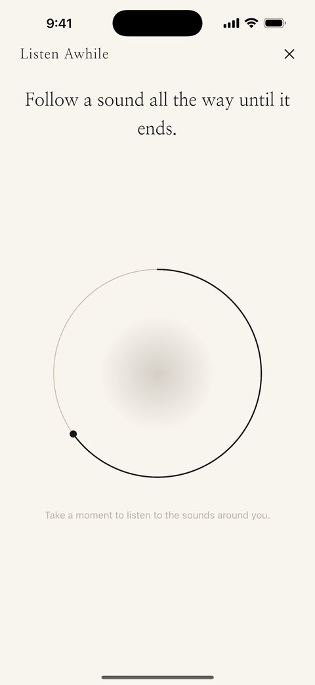
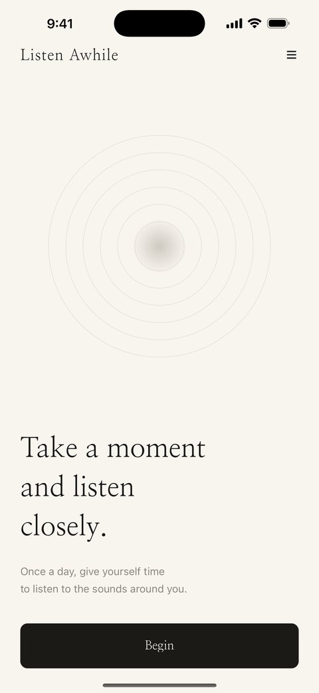
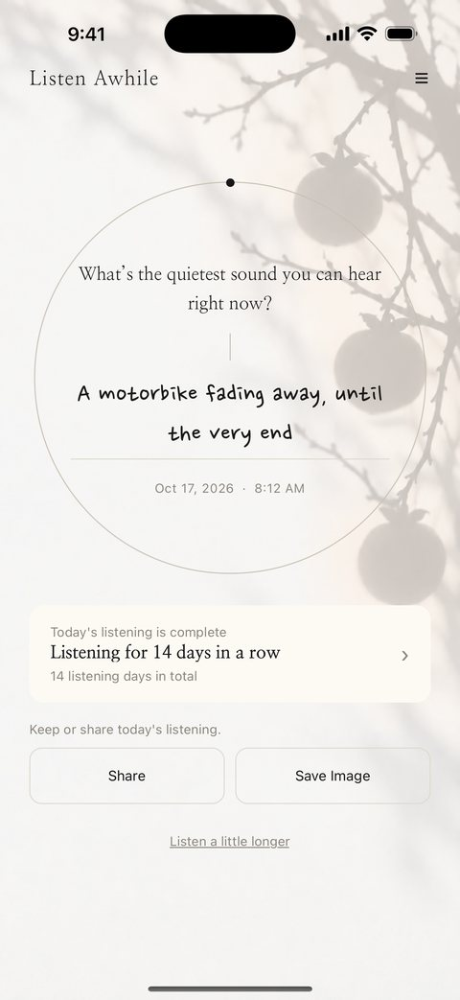
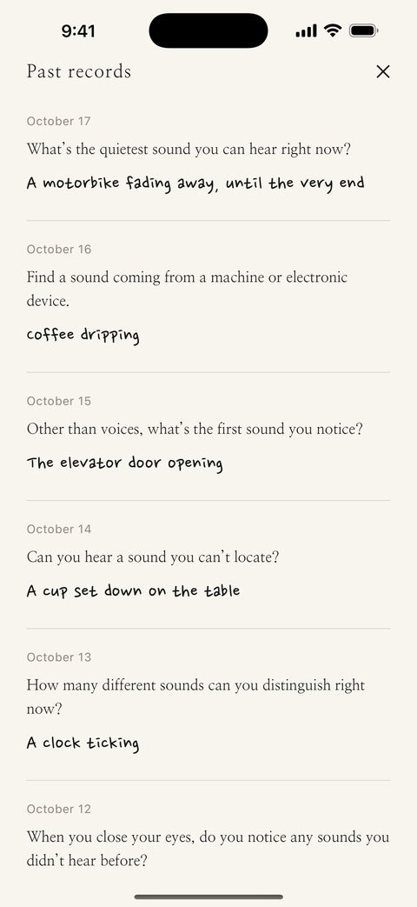

귀기울임 · 耳澄まし
Take a moment
and listen
closely.
Listen Awhile is a small app for listening to the sounds around you once a day, and writing down what you heard in a single line.
Free. No ads, no sign-up.

A day with the app



About the app
One listening prompt a day
A single prompt arrives each day — "What’s the farthest sound you can hear right now?" There is no right answer. Thirty seconds, wherever you happen to be sitting.
For 30 seconds, just listen
When you open a prompt, the writing field stays closed for 30 seconds. There is no countdown to watch — only a circle drawn slowly, stroke by stroke. Until it finishes, all you have to do is listen.
One line is enough
This is not a journal that asks you to fill a page. Write down what you heard, and today’s listening is done.
It adds up
Your records are kept in order, day by day, along with how many days in a row you’ve listened. After a month, you begin to notice the sounds you’ve been living in all along.
What it doesn’t do
Nothing is recorded
The app never accesses your microphone. No audio is captured and none is stored. You do the listening; the app only holds the place where you write it down.
No account, no server
There is no sign-up. Your records stay on your device and are never sent anywhere. They are deleted along with the app, so you can export a backup file from the menu whenever you like.
Listen awhile.
Free. No ads, no sign-up.
Contact
If anything gets in your way, or you have a question, write to me anytime.
listenawhile@anotier.artMade by
Mingkoo
Design & development